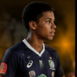
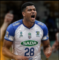
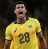
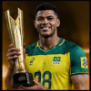
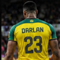

Carreira=-=-=~
Trajetoria
de Darlan
Darlan Souza construiu sua carreira com muito esforço e superação. Desde os primeiros passos no vôlei, mostrou talento e determinação para chegar cada vez mais longe.
Ao longo dos anos, passou por clubes importantes, conquistou espaço na seleção brasileira e se tornou uma das grandes referências da nova geração do vôlei.
Darlan
Souza
Linha do tempo
Da base
ao mundo
Veja os principais momentos da carreira de Darlan Souza, desde os primeiros passos no vôlei até a conquista de importantes títulos com a seleção brasileira.

2012
Início no vôlei
Darlan começou a jogar vôlei ainda jovem, mostrando desde cedo seu talento e paixão pelo esporte.

2018
Primeiros grandes Clubes
Chegou a grandes clubes do Brasil, onde se destacou como um dos principais opostos da geração.

2021
Foi convocado para a seleção brasileira e passou a defender o país em competições internacionais.

2023
Conquistou títulos importantes, consolidando seu nome entre os principais jogadores do vôlei mundial.

2025
Hoje, Darlan continua sua trajetória, com foco em evoluir, conquistar mais títulos e inspirar novas gerações.